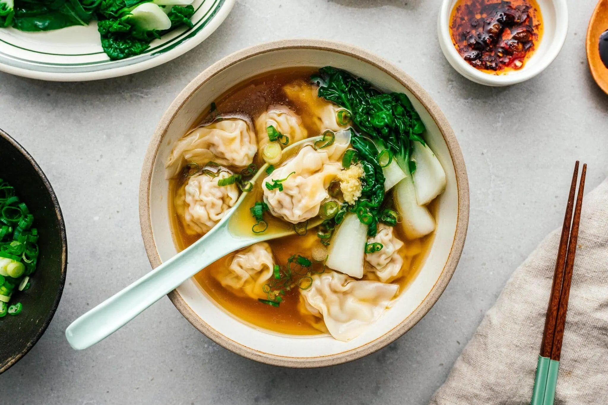

Won Ton Soup

This Won Ton Soup recipe is simple, delicious, and perfect for a comforting meal. It features a flavourful broth
and
tender wontons filled with a savory mixture of pork and shrimp.
Ingredients
- For the Broth:
- 8 cups chicken stock (low sodium preferred)
- 1 inch ginger, peeled and sliced
- 5 cloves garlic, smashed
- 2 scallions, chopped (whites and greens separated)
- 1 tablespoon soy sauce
- 1 tablespoon Shaoxing wine (optional)
- 1 tablespoon sesame oil
- 2 teaspoons sugar
- ¾ teaspoon white pepper
- Optional: Chinese chili oil for garnish
- For the Wontons:
- ½ lb ground pork
- ½ lb shrimp, peeled, deveined, and chopped
- ¼ cup green onions, thinly sliced
- 1 tablespoon ginger, minced
- 1 tablespoon soy sauce
- 1 tablespoon Shaoxing wine
- 1 teaspoon toasted sesame oil
- ½ teaspoon salt
- ¼ teaspoon white pepper
- 1 teaspoon cornstarch
- Wonton wrappers (about 50-60)
- For Serving:
- 1 lb leafy greens (bok choy or gai lan), briefly blanched
- Chopped scallions for garnish
- Chili oil (optional)
Instructions
- Prepare the Broth:
- In a large pot, combine the chicken stock, ginger, garlic, scallion whites, soy sauce, Shaoxing wine, sesame
oil, sugar, and white pepper. Bring to a simmer over medium heat.
- Make the Wonton Filling:
- In a mixing bowl, combine ground pork, chopped shrimp, green onions, minced ginger, soy sauce, Shaoxing wine,
sesame oil, salt, white pepper, and cornstarch. Mix thoroughly until well combined.
- Assemble the Wontons:
- Place a wonton wrapper on a clean surface. Add about a teaspoon of filling to the center. Moisten the edges
with water, fold the wrapper in half to create a triangle, and press to seal. Bring the two corners of the
triangle together to form a little pouch, sealing with a bit of water if necessary. Repeat until all filling is
used.
- Cook the Wontons:
- In a separate pot, bring water to a boil. Add the wontons and cook until they float to the surface, about 3-5
minutes. Remove with a slotted spoon and set aside.
- Blanch the Greens:
- In the same boiling water, add the leafy greens and blanch for about 1-2 minutes until tender. Drain and set
aside.
- Serve:
-
Remove the ginger and garlic from the broth. Place the cooked wontons and blanched greens in bowls, then ladle
the hot broth over them. Garnish with chopped scallions and drizzle with chili oil if desired.
This recipe is versatile; feel free to add other vegetables or adjust the seasoning to your taste. Enjoy your
homemade wonton soup!